-
Linea Corallo
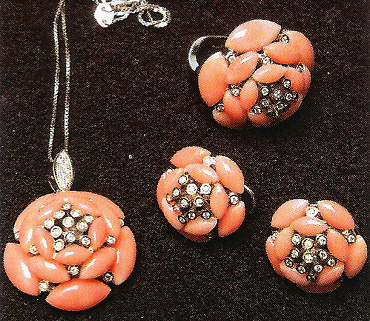La fortuna con noi Il corallo mediterraneo è da sempre portafortuna, simbolo di rinnovamento della vita. Secondo la tradizione italiana veniva regalato nei matrimoni e nelle nascite e nei momenti delle decisioni importanti. Protegge dal male e quindi bisogna portarlo sempre vicino.
-
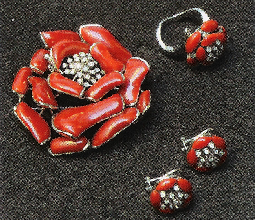
Luck with us The Mediterranean coral has always been considered as a good luck charm, symbol of renewal of life. According to Italian tradition, it was offered at weddings, births and in moments of important decisions. It protects from evil and thus you have to carry it with yourself.
-
Linea Sciacca
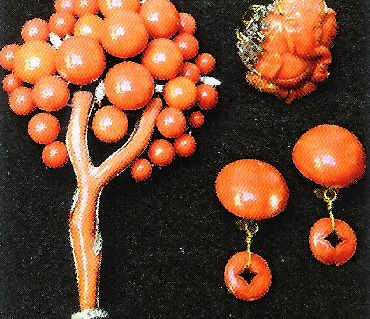Il fascino del corallo fossile Viene realizzata col famoso corallo arancio, antico, e fossile unico al mondo di Sciacca, località della Sicilia. La leggenda dice che lo trovò un pescatore tuffandosi per recuperare un ciondolo con una Madonnina incisa e da allora viene considerato un dono che la Madonna ha fatto all’umanità come protezione dal male e portafortuna.
-
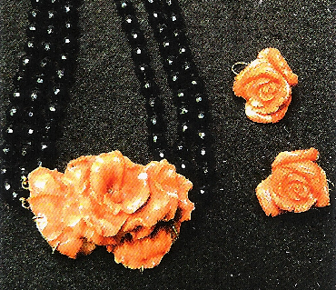
The fascination of the fossilized coral Made with the famous orange coral: the ancient fossil unique in the world found in Sciacca, a town in Sicily. The legend says that it has been found by a fisherman diving to recover a pendant engraved with a à/Iadonna portrait and since then it is considered a gift for luck that the Madonna. did to Italy.
-
Linea Maharaja
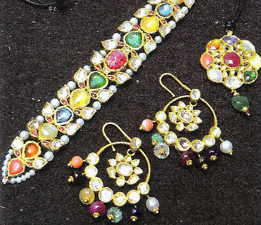Preziosa India Pezzi unici. Gioielli antichi della tradizione indiana rivisitati dalle Muse in chiave moderna. Realizzati in oro giallo smalti a fuoco, diamanti, rubini, smeraldi e zaffiri e altre pietre preziose.
-
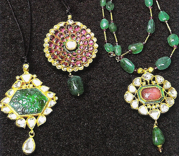
Precious India Old jewels of the indian tradition revisited in a modern way by le Muse Gioielli. Made of yellow gold, fired enamels, diamonds, rubies, emeralds, sapphires and other precious stones.
-
Linea Regina Vittoria
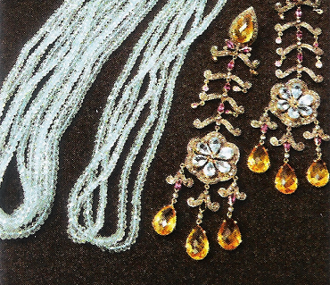L'antico impero Questa linea di gioielli è realizzata in oro, argento, diamanti & pietre preziose quali acquamarina, smeraldo, rubino,, zaffiro blu, rosa o giallo termalina rosa. Pezzi unici che ci riportano ad un epoca Vittoriana rivisitati dalle Muse per le donne di oggi.
-
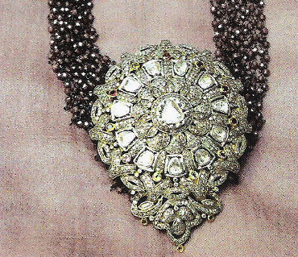
The ancient empire Queen Victoria line is made of gold, sili/Jef); diamonds, and precious gem stones such as acquamarina, emerald, ruby, sapphire and tourmalines. Unique pieces that take us back ta a Victorian era, revisited by le Muse.
-
Linea Cammei
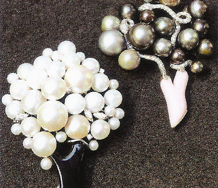Sculture in miniatura I gioielli realizzati con i cammei sono vere e proprie sculture. Pezzi unici. L’arte antica italiana dell’incisione su particolari tipi di conchiglie da cui maestri scultura della scuola italiana con i loro metodi antichi, coi bulini e l’olio d’oliva, ricavano vere opere d’arte uniche al mondo.
-
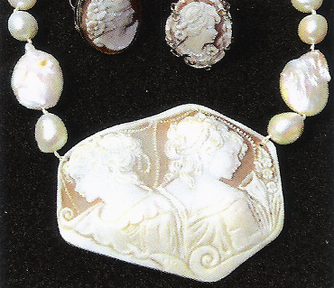
Miniature sculptures The line Jewelry Cameos is made out of true sculptures. The Italian art of engraving of particular types of shells from which sculptors of the Italian school with their antique methods of chisels and olive oil make real masterpieces of art unique in the World.
-
Linea Fashion

Alta gioielleria italiana Questa linea racchiude il meglio dell’artigianato e della tradizione orafa italiana. Si passa da modelli design in oro giallo, modernissimi, ad altri in oro giallo o bianco creati per pietre da collezione quali ametiste, citirini, quarzo rosa o bianco, acquamarine incise.
-

Italian fine jewelry This Fashion Line brings together the best of handcrafts and traditional Italian jewelry. It embraces design models in yellow gold as well as modern or white gold creations for collectibles such as ametysts, citrines, rose quarts, white or engraved acquamarina. Unique pieces Made in Italy.
-
Linea Slides
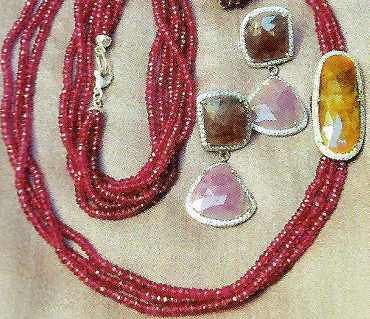Innovazione preziosa Questa linea usa tagli nuovi delle pietre preziose quali rubini, zaffiro blu rosa o giallo, smeraldi e vari corindoni di colori diversi. Questo taglio piatto e sfaccettato che esalta la preziosità della pietra rendendola leggera e piacevole da indossare è adatto alla cristalloterapia, per il benessere del corpo attraverso i poteri curativi delle pietre.
-
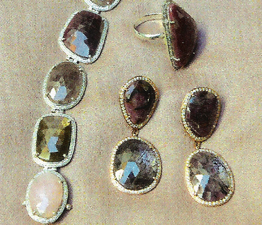
Precious innovation This Line entails new cutting style of precious stones such as ruby, blue yellow and pink sapphire, emerald and corundum of various colors. This flat and faceted cut enhances the preciousness of gem stones making them the lighter and pleasant to wear. These charm stones support the wellbeing of the body through the healing powers of stones.
-
Linea Best Gems
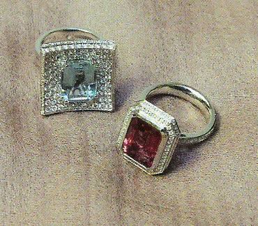Preziosa e classica Questa è la linea più preziosa e classica che racchiude il meglio della tradizione orafa italiana utizzando solo pietre preziose e di alta qualità. Pavè di diamanti dall’incassatura perfetta e magnifici rubini o zaffiri, rosa, blu, gialli, acquamarine, rubelliti e tormaline rosa. L’alta gioielleria classica si fonde con la modernità e il nuovo quando realizza pezzo unici con diamanti dai vari colori grigi o bruni o varie sfumature tagliati piatti a slides con diamanti bianchi taglio brillante a fare da contorno.
-
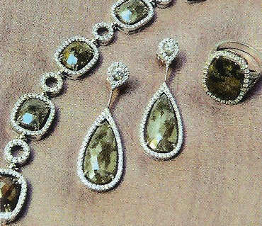
Precious and classic This Line is the most precious and classic. lt embodies the best of the Italian jewelry tradition, only precious and high quality stones, paved diamonds perfectly embedded and magnificent rubies, acquamarina, tourmalines, rubellites, sapphires. Fine classic jewelry blends with the new and modem style providing unique pieces with diamonds of various colors and shapes like gray or brown, cut plates with round brillant cut white diamonds.